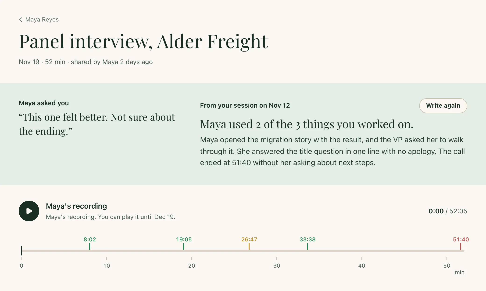

Give yourself coaching superpowers.
Your clients think it went well. Work Coach lets you hear what really happened and focus on what matters most.


Clients are horrible judges of how things went.
"I think it went well, I used your advice."
Five first-round interviews. No second round.
And you don't have time to listen to all of their recordings on your own. Work Coach makes it easy to capture all of it and focus on the parts that matter to improve your coaching.
How it works
You record your coaching sessions.
So Work Coach knows what your client is working on.
- Coaching sessionNov 12 · 52 min
- Intro sessionOct 29 · 48 min
Your clients record their real calls.
So you know how well they're using it.
- Panel interview, Alder FreightNov 19 · 52 min
- Networking callNov 18 · 25 min
- Hiring manager screen, Bexley SupplyNov 14 · 34 min
Work Coach analyzes their calls.
It reads their calls against your sessions, using your own curriculum, playbooks and methodology. It's a first pass. You take it from there.
- Your coaching sessionsStep 1
- Their real callsStep 2
- Your curriculum, playbooks and methodologyYours
| What you asked Maya to do | Nov 14 | Nov 18 | Nov 19 |
|---|---|---|---|
| Open the story with the result | |||
| Own the title gap | |||
| Answer, then stop talking |
Used Not used Didn't come up
The same amount of work for you. A much better experience and better results for your clients.
How they're improving.
Each row is something you asked them to do. Each column is a call or a practice run. Click any mark to see what happened and hear what they said.
Given in your session Used Partly Not used Didn't come up
Priya asked for Maya's part in the migration. Maya said she was one of the people on the project. The result came later, as a guess.
14:20Maya: "Honestly I was kind of just one of the people on the project, so I can't take too much credit."
Missed chance: Priya: "Tell me about the migration. What was your part in it?" A direct opening for the story.
Then drill down as far as you want.
Three clicks take you from the trend to the minute they said it.
-
1
Click a row.
You get one piece of advice, every time it came up.
One piece of adviceOpen the story with the result.
Working. Used the last three times it came up.
Nov 12sessionNov 14not usedNov 16practiceNov 18usedNov 19used -
2
Click a call.
You get what they used and what they didn't.
One callPanel interview, Nov 19
She used 2 of the 3 things you worked on.
- UsedOpen the story with the result.
- UsedOwn the title gap.
- Not usedAnswer, then stop talking.
-
3
Click a quote.
You get the moment itself. Read it or press play.
One momentPanel interview, 8:02
"I led the onboarding migration. We took it from nine days to five."
The opening you rebuilt, word for word.
Ask Claude or ChatGPT how your clients are doing.
If you already work in Claude or ChatGPT, connect Work Coach to it. Your assistant reads what your clients have shared with you and your own sessions with them, so you can ask about a client in plain English and get an answer from their real conversations.
It helps most when you have a full roster. Ask what's new since yesterday and it tells you which client to look at first.
Under two minutes in Claude: yesterday's rundown, then one interview, then the moment itself.
Practice is built in.
Most clients don't rehearse. It's awkward, and there's nobody to rehearse with. Work Coach gives them a practice partner that's always there, so they practice more and improve faster.
Built on your frameworks
The scenarios and the scoring start from proven frameworks, then get customized with your own content.
It tracks how they're improving
Every take gets a score and specific notes, so you both see the progress from one take to the next.
They send you their best takes
When a client has a take worth showing, they share it with you and you give them feedback.
| Scored on your advice | Take 1Nov 16 | Take 2Nov 17 |
|---|---|---|
| Open the story with the result | ||
| Own the title gap | ||
| Ask about next steps | ||
| Confidence | 58 | 82 |
| Score | 68 | 84 |
Used Partly
4:55Maya: "Second try. I got the ask in."
AI is an accelerant for coaches, not a replacement.
AI on its own isn't good enough to coach someone today. For people who are serious about getting better, it still can't do what a person can. You know your client, so you can tell them: that part was okay, focus on this, and send me your best practice session answering that question again.
What AI can do is complement you in reviewing even more content from your client and surface to you the most important parts. You've seen how job searching has turned into an arms race. Your clients need an expert on their side who brings insights from data and has the judgment to know what to do with it.
Make the most of the time you have.
You have very little time for any one client. Work Coach makes sure it goes to the right things.
In your sessions
You walk in knowing how their calls went, so the whole session goes to coaching.
Between sessions
If you spend time outside of sessions, spend it carefully. Work Coach shows you the calls and the moments most likely to help your client improve. Review those and skip the rest.
More personal coaching
The coach who gives the most personalized experience will be the most successful. Feedback on what your client really said is about as personal as it gets.
Works on Mac and Windows, with any meeting tool.
Work Coach records on the computer itself, so no bot joins the call.
- Mac
- Windows
- iOS
- Zoom
- Google Meet
- Microsoft Teams
 Slack huddles
Slack huddles- Anything else
Pricing
$100 a month, plus $25 a month for each client.
5 clients$225a month
Questions coaches ask
Is this trying to replace me?
No. Looking for a job has turned into an arms race, and so has doing well at work. People need a human coach for a lot of reasons. They feel far more accountable to a person than to an AI, and human judgment is still what helps them most.
The coaches who do well in the next couple of years will use AI to focus on what's most important with each client. That's what Work Coach does. It gives you the information you need, so you can focus on the right things to help your client succeed.
Where does the advice come from?
From you. It's based on the coaching sessions you have with your client, plus your own curriculum, frameworks and content. Work Coach reads your sessions and lists what you asked the client to do. You can edit that list and pin what matters most. Everything your client shares afterward is checked against it.
Can I use it from Claude or ChatGPT?
Yes. Add Work Coach as a connector and ask about your clients there. It reads what they've shared with you and your sessions with them, and it can play a moment from a recording inside the chat. It can't change anything in Work Coach.
How does this work with other meeting recorders like Granola?
However you like. You can run Work Coach at the same time as Granola, or use it instead. The same goes for any other meeting recorder.
Who decides what I get to see?
Your client does. Nothing reaches you unless they share it, one conversation or practice session at a time. They can stop sharing anything later, and if they stop working with you, everything they shared goes with them.
Does my client see what Work Coach tells me about them?
No. Your read of each conversation is written for you, and only you can open it. Your client sees their own coaching from Work Coach and whatever you choose to tell them.
Do the other people in the meeting know it's being recorded?
Work Coach records on your client's own computer. No bot joins the call. As with any recording tool, your client is responsible for following the recording laws where they live and their employer's policies.
Is my client's data private?
Yes. Recordings and transcripts belong to your client. They are shared with you only when your client sends them, never shared with their employer, and never used to train shared models. Your client can delete everything at any time.
Try it with one client.
Setup takes a couple of minutes. Send one client your link and see how their next call really went.
Sign up